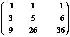
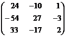
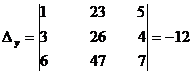

MATHS :: Lecture 11 :: INVERSE OF A MATRIX

INVERSE OF A MATRIX
Definition
Let A be any square matrix. If there exists another square matrix B Such that AB = BA = I (I is a unit matrix) then B is called the inverse of the matrix A and is denoted by A-1.
The cofactor method is used to find the inverse of a matrix. Using matrices, the solutions of simultaneous equations are found.
Working Rule to find the inverse of the matrix
Step 1: Find the determinant of the matrix.
Step 2: If the value of the determinant is non zero proceed to find the inverse of the matrix.
Step 3: Find the cofactor of each element and form the cofactor matrix.
Step 4: The transpose of the cofactor matrix is the adjoint matrix.
Step 5: The inverse of the matrix A-1 = 
Finding Matrix Inverse
Cramer's Rule, Inverse Matrix, and Volume
Find the inverse of the matrix

Solution
Let A =

Step 1

Step 2
The value of the determinant is non zero
\A-1 exists.
Step 3
Let Aij denote the cofactor of aij in
Step 4
The matrix formed by cofactors of element of determinant

\adj A =

Step 5

=
SOLUTION OF LINEAR EQUATIONS
Let us consider a system of linear equations with three unknowns
The matrix form of the equation is AX=B where is a 3x3 matrix
X = and B =
Here AX = B
Pre multiplying both sides by A‑1.
(A-1 A)X= A-1B
We know that A-1 A= A A-1=I
\ I X= A-1B
since IX = X
Hence the solution is X = A-1B.
Example
Solve the x + y + z = 1, 3x + 5y + 6z = 4, 9x + 26y + 36z =16 by matrix method.
Solution
The given equations are x + y + z = 1,
3x + 5y + 6z = 4,
9x + 26y + 36z =16
Let A= , X= , B=
, B= 
The given system of equations can be put in the form of the matrix equation AX=B
The value of the determinant is non zero
\ A-1 exists.
Let Aij (i, j = 1,2,3) denote the cofactor of aij in 
The matrix formed by cofactors of element of determinant  is
is
\adj A = 
We Know that X=A-1B
\ =
=
x = 0, y = 2, z = -1.
SOLUTION BY DETERMINANT (CRAMER'S RULE)
Let the equations be
……………………. (1)
Consider the determinant
When D ≠ 0, the unique solution is given by
Example
Solve the equations x + 2y + 5z =23, 3x + y + 4z = 26, 6x + y + 7z = 47 by determinant method (Cramer’s Rule).
Solution
The equations are
x + 2y + 5z =23,
3x + y + 4z = 26,
6x + y + 7z = 47

By Cramer’s rule
Þ x = 4, y = 2, z = 3.
| Download this lecture as PDF here |